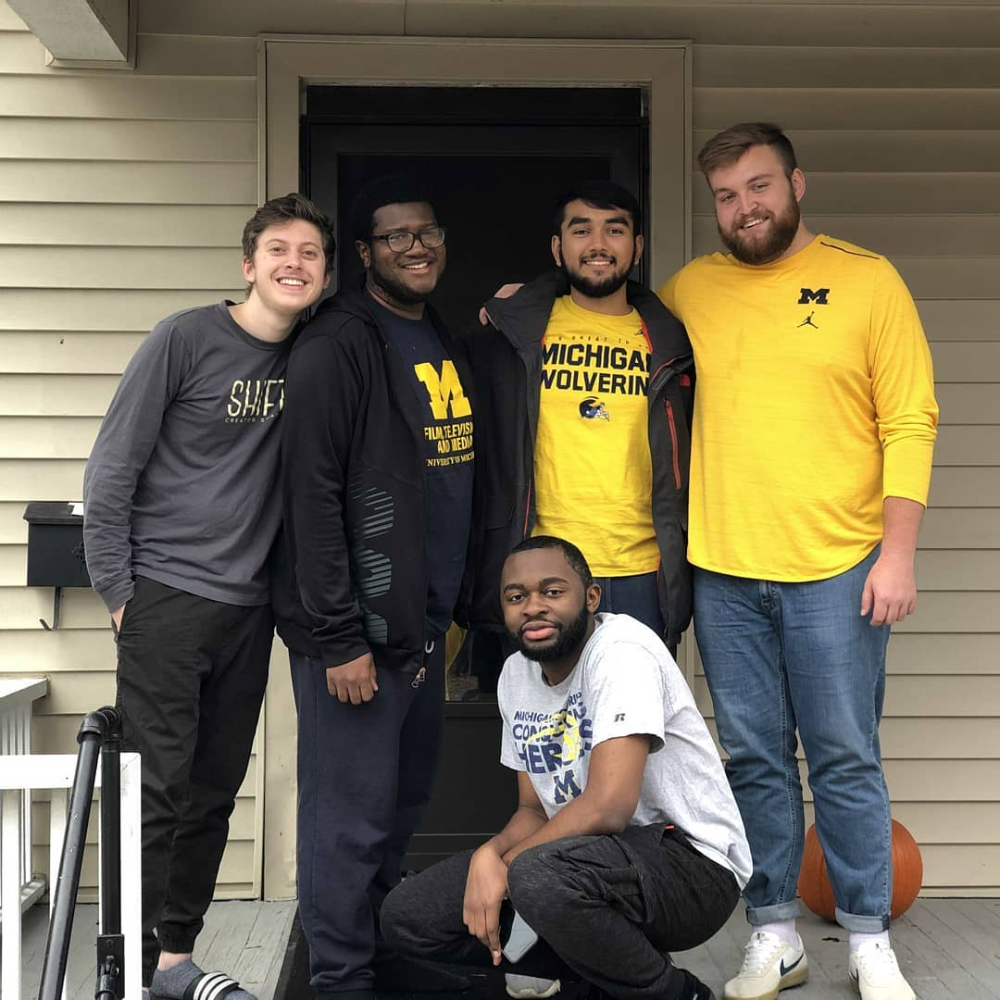
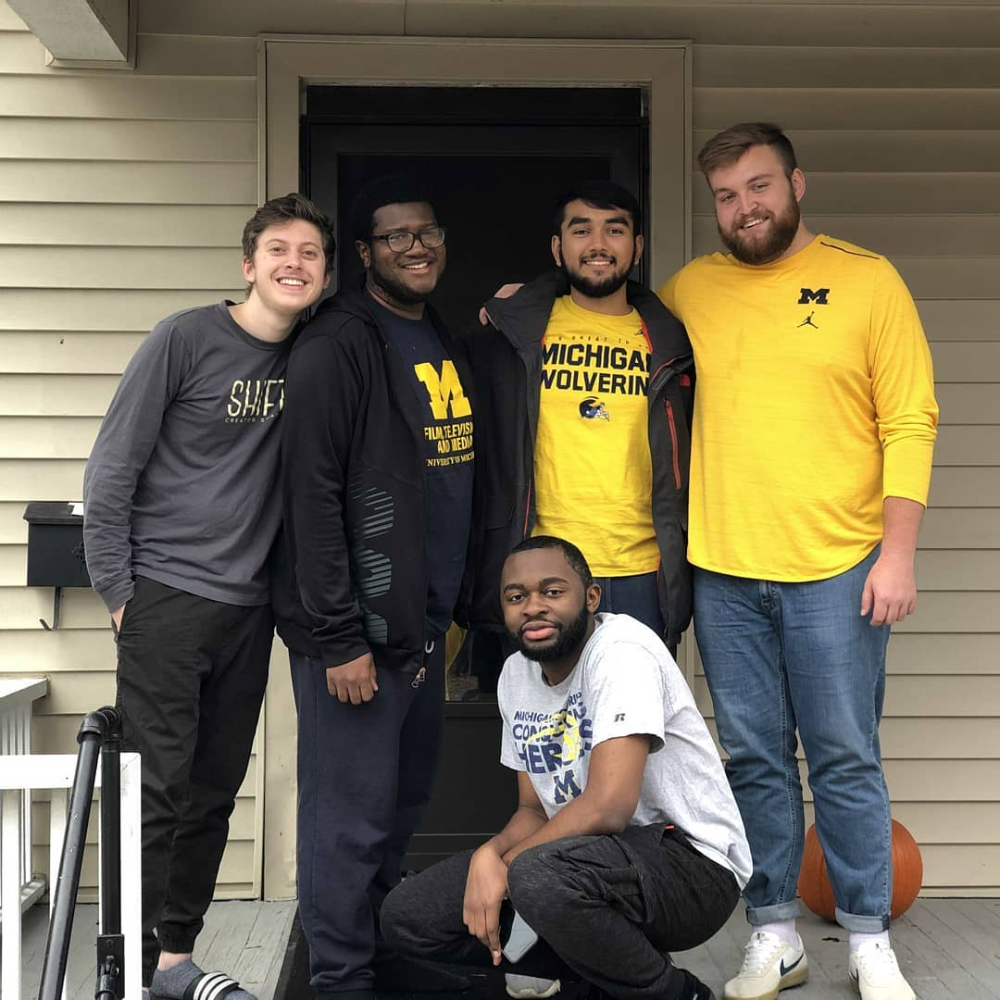

Hi, I’m Chance. I currently attend graduate school full time at the University of Michigan School of Information (UMSI) in Ann Arbor, MI. At UMSI I am studying User Experience (UX) Design and Research. In addition to attending school, I work part time as a Graphic Designer for a company called Artonic Web in Tecumseh, MI, about 45 minutes southwest of Ann Arbor. I also have experience working as a freelance Graphic Designer, during which I have worked on many projects for small companies throughout Northern Michigan.


 
